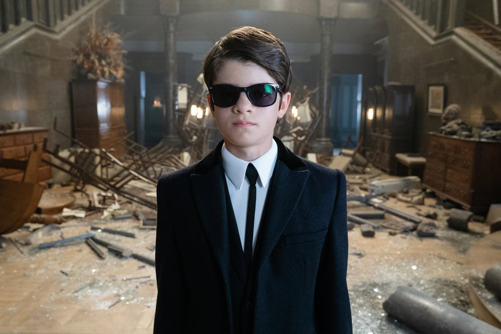

| Artemis Fowl from the Disney movie "Artemis Fowl"  |
Artemis, a criminal mastermind, and his bodyguard, referred to as Butler, kidnaps a fairy named Holly Short which triggers a quarrel between him and the LEP (Lower Elements Police) in order to get Holly back. In the end, they settle their differences and start working together to defuse various fairy and/or human threats. Artemis is one of my favorite characters in general because in both the book and the movie, he is an young and intelligent person who talks very formal and analytical, making him very unique to me and kind of funny. |
|---|---|
| Ash Ketchum from "Pokemon: Journeys" |
Ash is on a journey to become a Pokemon Master, and so he enters the World Coronation Series to become the very best in Pokemon battling. In the end, he achieves his goal, beating the world #1, Leon. Other than that though, he loves going on adventures with his friend Goh and his partner Pikachu around the different islands and places in the Pokemon universe. Ash is a character I have watched since I was very young, and he earned his spot in this list because of how enthusiastic, optimistic, friendly, happy, and persevering he is. He's a Pokemon trainer who values his friendships and always helps those in need. |
Wednesday Addams from the Netflix Show "Wednesday"  |
Wednesday finds herself in an new school named Nevermore Academy due to the fact that she causes trouble in other places. However, in this school, she follows a series of murders that affect those around her. Wednesday may seem scary, but she is actually a very wholesome character. She mostly keeps to herself and her unique hobbies, only socializing with others when she needs it. At the same time, she is very confident, independent, and mysterious, making her stand out from other characters. |
Jin Sakai from the game "Ghost of Tsushima"  |
Jin Sakai is a samurai who finds himself in the way of the Mongol invasion of his island, Tsushima. In order to defeat his foes, he adapts new techniques that do not follow the samurai code, testing his honor and beliefs. Jin for me is a brave person who does what he needs to protect those he loves, and to defeat those who endanger his people. He is also very honorable, even though he strayed away from the samurai code. He has a kind heart, and so fights for people who can't fight for themselves. |